明生龍
A Sumo Story from Japan
Part wedding, part funeral,
and a cultural celebration
only a rare few get to see.
How someone described danpatsu-shiki to me
I travelled 15 hours
to watch a man
get a haircut.
Let me explain.
妙義龍
Sekiwake — third highest rank
601 wins · 15 years · 6 gold stars
Now Furiwake, a sumo elder.
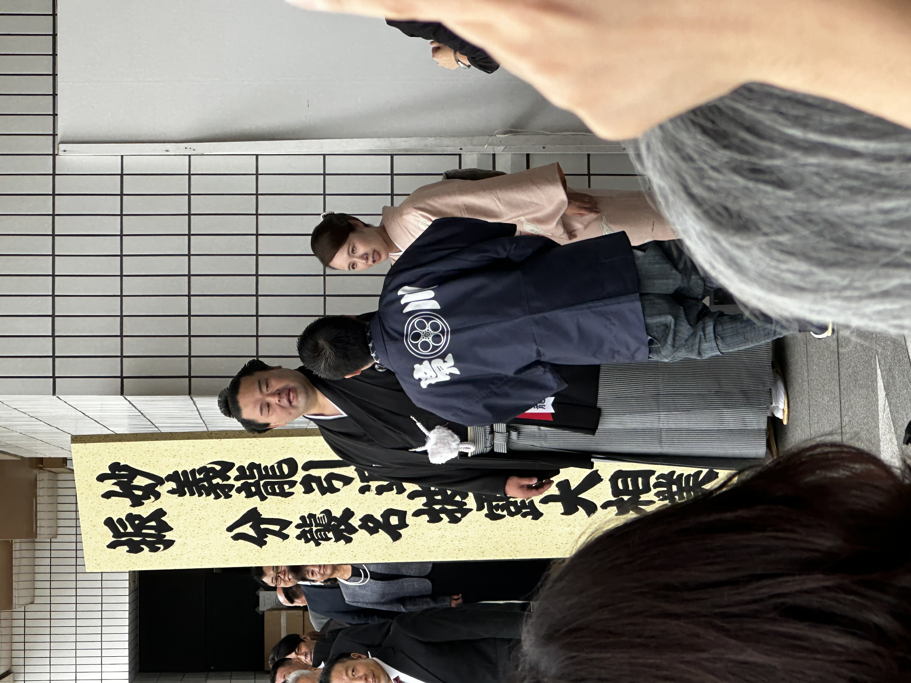
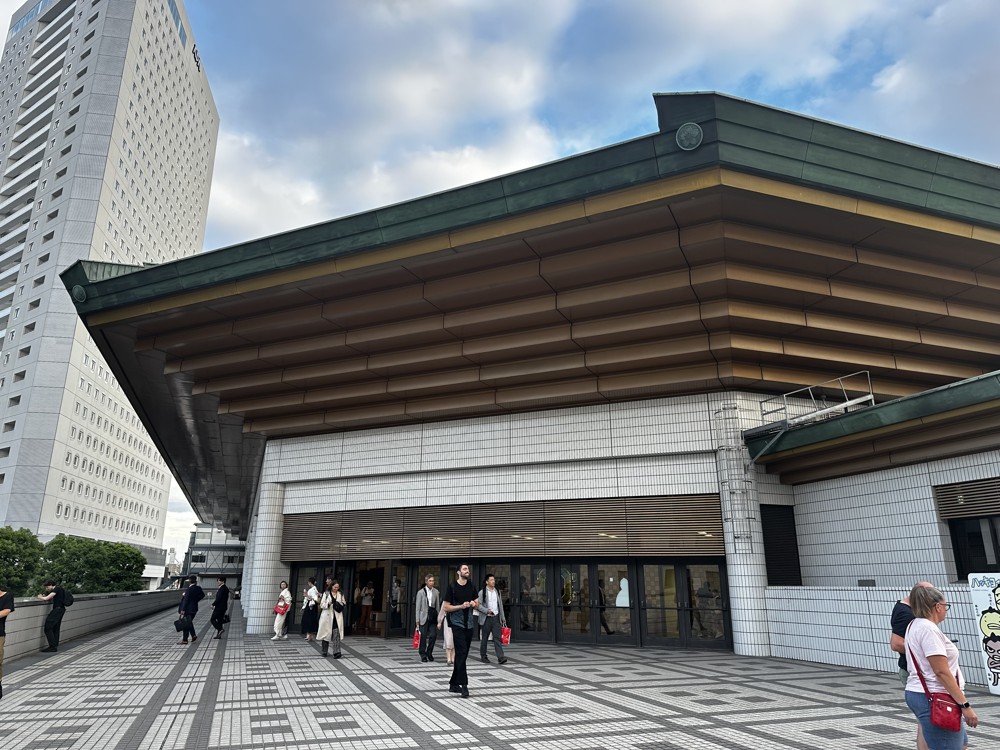
両国国技館
The spiritual home of sumo. Tokyo.
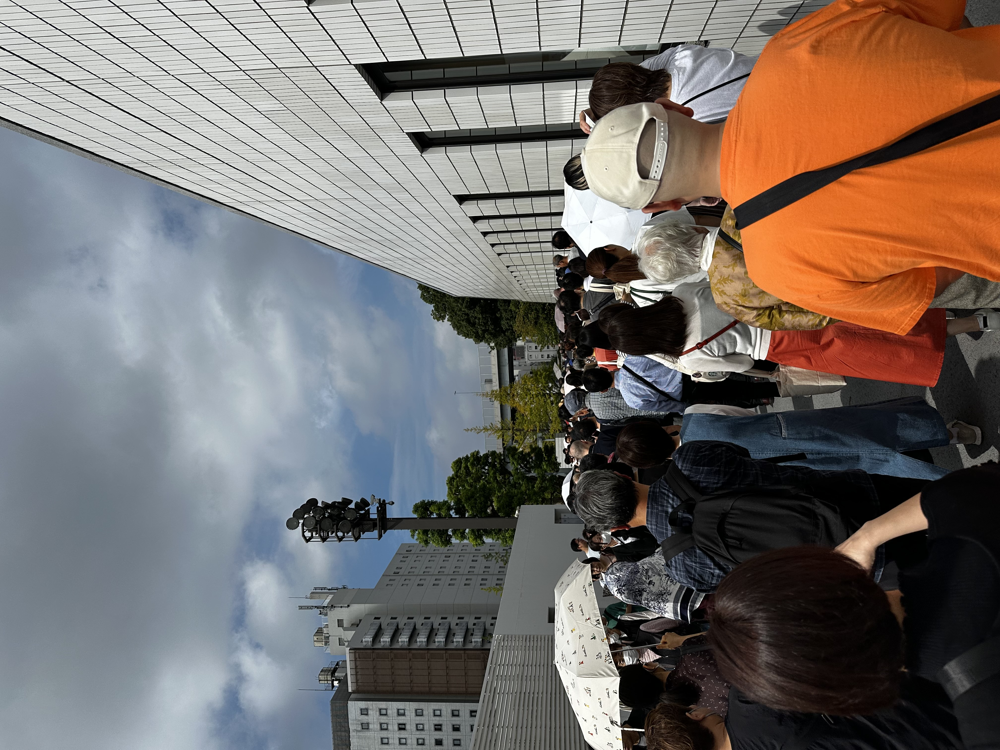
October in Tokyo.
A hot day. A long queue.
Anticipation in the air.
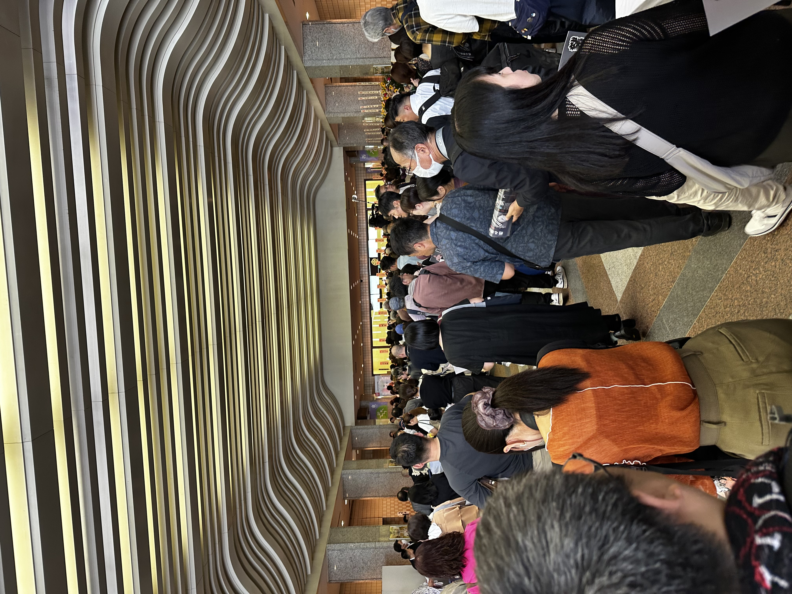
Inside: every top sumo star.
Signing autographs. Shaking hands.
Royalty among the people.
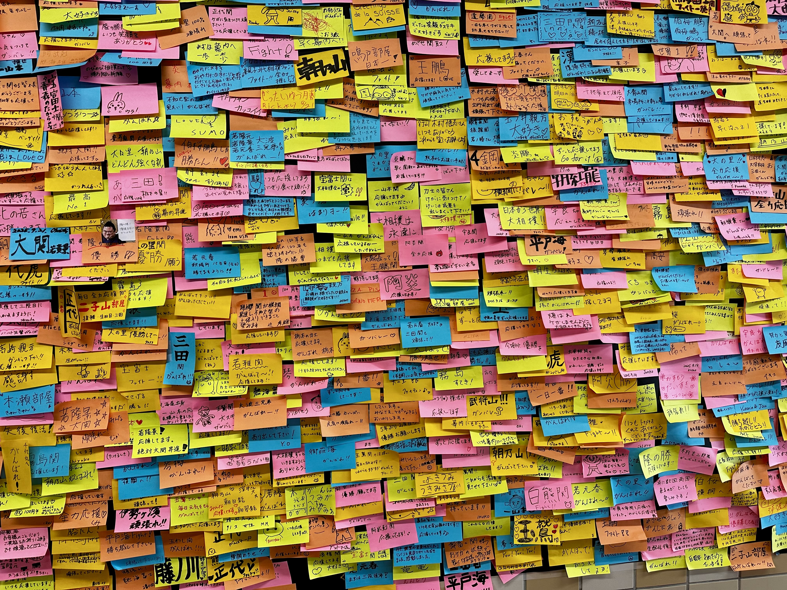
Hundreds of messages. Each one a thank you.
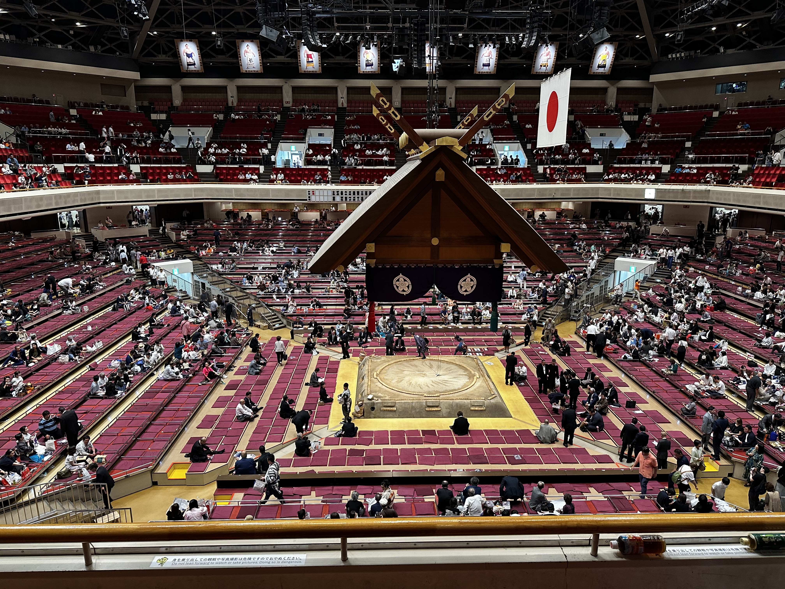
土俵
Sacred ground. Where careers are made and ended.
Then the drums started.
儀式
A full day of ritual
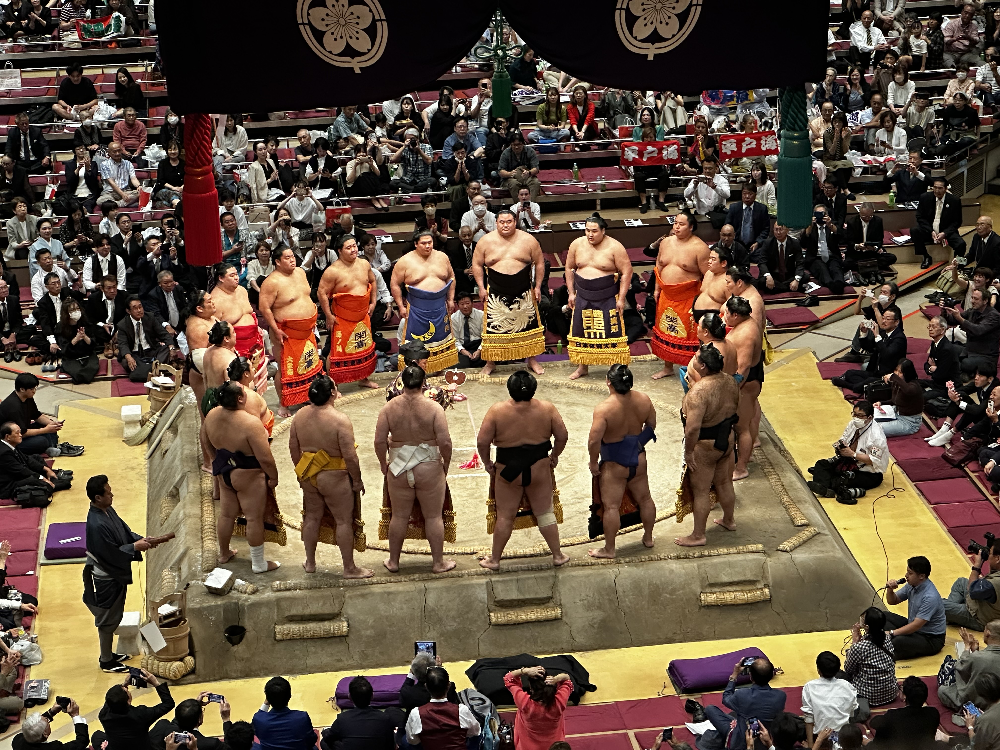
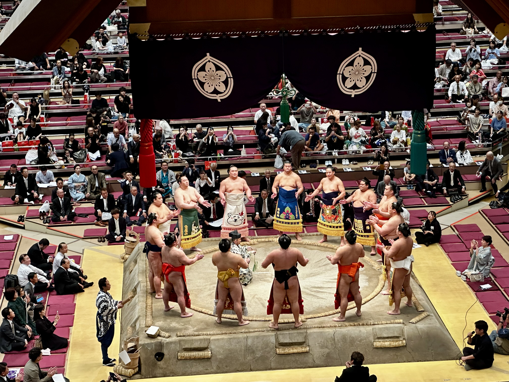
Real matches. Real competition.
The sacred traditions honored.
His final match
as a sumo wrestler.
His opponents?
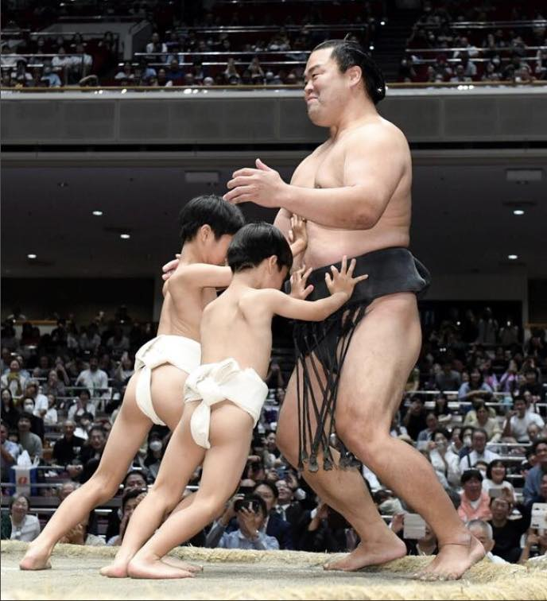
子供たち
His children.
They pushed him. He fell.
The crowd laughed and cried at the same time.
大銀杏
In sumo, the topknot isn't just a hairstyle.
It's identity.
Years to grow. One day to cut.
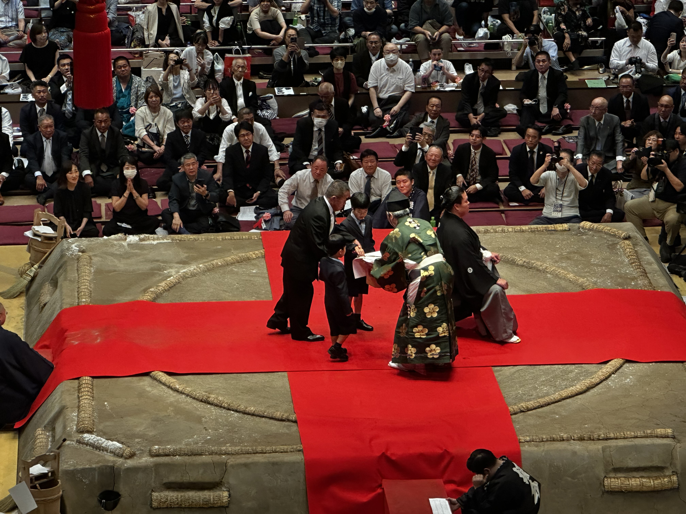
二時間半
One snip at a time.
Everyone who shaped his career.
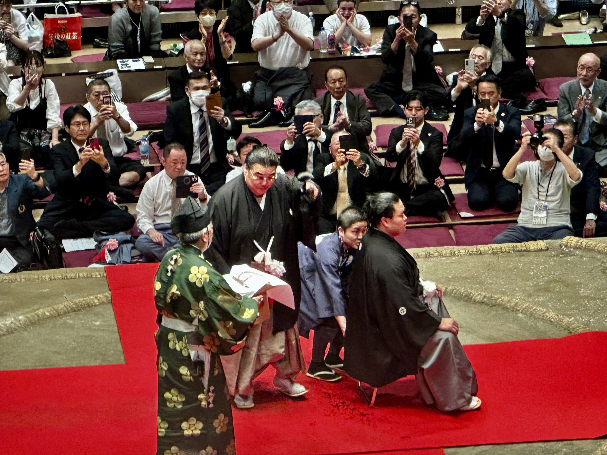
Coaches. Rivals. Sponsors. Friends.
Each one walked up, took the scissors, and cut.
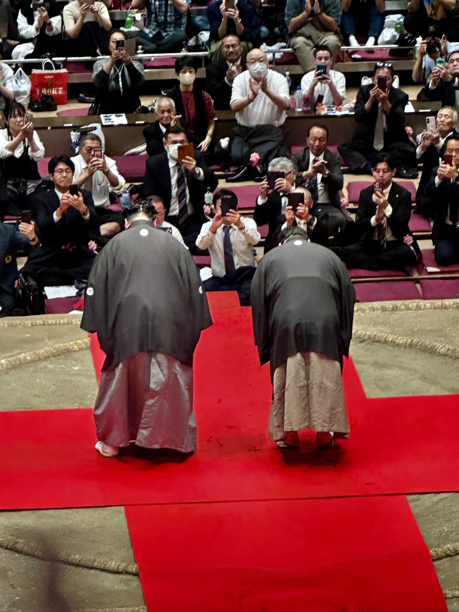
Each cut was small.
But each cut meant something.
儀式は大切
Rituals matter.
This man gave fifteen years to sumo.
Sumo gave him two and a half hours to say goodbye.
That's not inefficient.
That's respect.
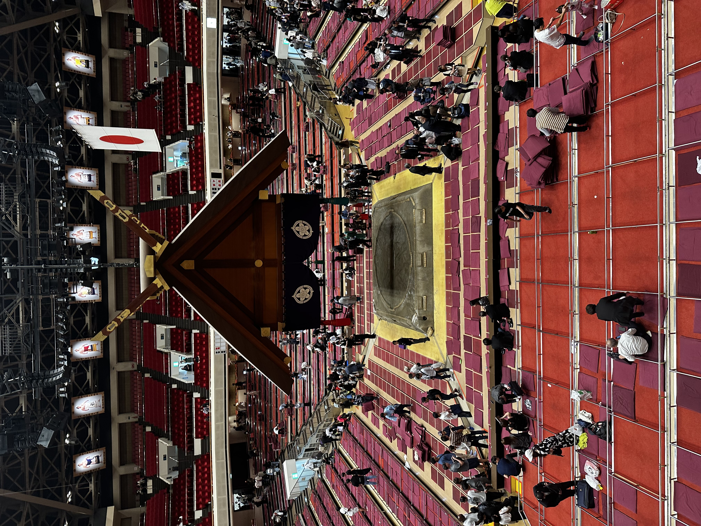
And then it was over.
A career closed properly.
一期一会
One time. One meeting.
This moment will never happen again.
We rush endings.
How we close a chapter
shapes how we remember it.
Cherish this time together.
Look for rituals in everyday life.
ありがとうございました